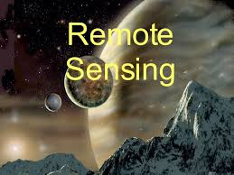
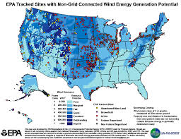

简介
现在，一个天遥感领域，地理信息系统已成为令人兴奋和迷人的快速膨胀的机会。许多企业花费在这些领域的大量资金。这里的问题是为什么这些字段是近年来如此重要。两个主要的原因是有这背后。 点击每个对象，以了解更多。 简介 概观 历史 申请书
这是一个简单的介绍，以遥感。为了获得地理信息系统（GIS）的更多信息，请参阅下面的可折叠面板。 简介 概观 历史 申请书
1）现在，一个天科学家，研究人员，学生，甚至普通百姓都呈现为更好地了解我们的环境的极大兴趣。通过环境中，我们的意思是，他们的研究领域的地理空间和在那里发生的事件。换句话说，我们已经认识到随着数据描述它的地理空间，是我们的日常世界的一部分;几乎我们把每一个决定都影响或地理的一些事实所决定的。
2）提高在复杂的空间技术（可提供大容量空间数据），随着计算机硬件和软件（可处理这些数据）的成本下降，取得了遥感和地理信息系统经济实惠，不仅复杂的环境/空间的情况，但也实惠越来越广泛的观众。
因此，它成为小时的需要知道RS和GIS技术，以帮助地球和社会的可持续发展的未来。
有关GIS和RS的更多信息，请点击包含相关信息的可折叠的面板上。
遥感
从字面上遥感手段获取一个对象，区域或现象的信息，而即将与之直接接触。如果我们通过遥感这个意思，那么许多事情会在远程传感器，如现身地震仪，测深仪等不来了与地震的重点直接接触，候风地动仪可以测量地震的强度。同样没有进入与海底接触，测深仪可以测量它的深度。使用反射或发射的电磁能量的土地和水面通过;然而，现代遥感手段获取有关地球急性信息. 
遥感能够收集的危险或交通不便地区的数据。遥感应用包括监测森林砍伐，如亚马逊流域，在北极和南极地区冰川风貌区，以及沿海和深海测深。在冷战时期军事收集利用有关危险边界地区的数据对峙收藏。遥感也取代昂贵且速度慢的数据收集在地面上，以确保在该区域或物体不被打扰的过程。
轨道平台收集和来自电磁频谱的不同部分，这在较大规模的空中或地面为基础的检测和分析相结合，为研究人员提供足够的信息来监视诸如厄尔尼诺等天然长期和短期的现象的趋势传输数据。其他用途包括地球科学的不同领域如自然资源管理，农业领域，如土地使用和保护，以及国家安全和架空，地面和对峙收集的边境地区。

遥感的现代学科产生与飞行的发展。气球上的G. Tournachon（化名纳达尔）制成巴黎的照片，从他的气球在1858年信鸽，风筝，火箭和无人驾驶气球也被用于早期的图像。除了气球，这些第一，单独的图像不是在地图制作或用于科学目的特别有用。
系统航拍的开始第一次世界大战的军事监视和侦察的目的，达到了冷战时期的高潮与使用修改作战飞机，如P-51，P-38，RB-66和F-4C开发，或专门收集平台，如U2 / TR-1，SR-71，A-5和OV-1系列无论是在开销和防区外集合。更近期的发展是越来越小的传感器吊舱等所使用的执法部门和军队，在有人和无人平台。这种方法的优点是，这需要稍加修改一个给定的机身。后来成像技术包括红外，常规，多普勒和合成孔径雷达。
人造卫星在后者20世纪上半叶的发展使遥感技术进步到全球范围内的冷战的结束。仪表搭乘各种地球观测和气象卫星，如陆地卫星，雨云和最近的任务，如RADARSAT和UARS提供的各种数据，全球测量民用，科研和军事目的。空间探测其他行星也提供了机会，进行外星环境，合成孔径雷达搭乘麦哲伦航天器提供的金星详细的地形图的遥感研究，同时仪表登上SOHOallowed研究，对太阳和太阳风中进行，只是仅举几个例子。
最近的事态发展包括，开始在20世纪60年代和70年代的卫星图像图像处理的发展。几个研究小组在美国硅谷，包括美国航空航天局艾姆斯研究中心，GTE，和ESL公司开发的傅立叶变换技术导致的图像数据的第一个显着的提高。[来源请求]在1999年的第一个商业卫星（IKONOS）收集高分辨率图像推出。

卫星上的

本文包含有关遥感的相关信息。这些可折叠的面板设计和Anmol＆放编程; Anmol
地理信息系统
点击每个对象，以了解更多。
地理信息系统的扩展是地理信息系统，该系统由三个词，即。地理，信息和系统。这里所说的地理 与空间对象或特征可被引用的或相关于在地球表面上的特定位置的交易。该对象可以是物理的/天然的或可以是文化/人造。同样的字信息与大数据量大约在地球表面上的特定对象处理。该数据包括一组的定性和定量方面所述真实世界对象的获取。 期限制用于表示系统的方法，其中所述复杂的环境（包括大量，对地球表面的物体/特征和它们的复合物的特性）被分解成其组成部分为便于理解和处理，但被认为形成一个集成整个管理和决策。现在，一个天，这是有可能在很短的时间与复杂的计算机硬件和软件的开发。因此，地理信息系统是高度的各种素质和特点，地理位置以及规划和决策帮助一个基于计算机信息系统.
国际培训中心（ITC），荷兰定义的地理信息系统（GIS）作为一个计算机化的系统，便于数据录入，数据分析和数据展现尤其是在案件的阶段的时候，我们正在处理地理参考数据.
测绘印度协会（ISG） & 印度空间应用中心（ISRO） 定义地理信息系统的系统提供了一种计算机化的机制整合各种地理信息的数据集，并分析它们，以便产生相关的计划的需要在一个上下文信息。
据中心的空间数据库管理和解决方案（CSDMS），地理信息系统是基于计算机的工具，存在这种情况发生一个地球映射和分析事物和事件。
伯勒（1986） 定义的GIS为一组为从现实世界收集，存储，检索随意，转化和显示空间数据为一组特定的目的的工具。
Arnoff (1989) 定义地理信息系统为基于计算机的系统，该系统提供4套的能力来处理地理参考数据，即。数据输入，数据管理（数据存储和检索），操纵和分析数据的输出。
从上述定义中，我们可以得出结论，在GIS用户从系统输入地理参考的数据来分析它以各种方式和以产生从所述数据输出（地图等）期望的支持。地理信息系统借鉴了许多不同的学科，如制图，congitive科学，计算机科学，工程学，环境科学，大地测量，园林建筑，法律，摄影，公共政策，遥感，统计和测量的概念和想法。因此，它不仅涉及了从创建，处理，储存和使用地理信息所产生的基本问题的研究，但世行也探讨GIS对个人和社会，社会对GIS的影响的影响。

1) 保持地图制作的悠久的历史为背景，地理信息系统在20世纪中叶，随着计算机科学的发展已经研制成功。是由政府机构和大学在美国电脑中20世纪50年代和60年代完成的地理位置数据分析。
第一个真正的业务G.I.S.由罗杰·汤姆林森博士，林业部门和农村发展，加拿大开发。它被称为加拿大地理信息系统（CGIS），并用于存储分析和操作地相关的数据。罗杰Tomlison博士也被称为G.I.S之父. 1964年，计算机图形与空间分析实验室成立于哈佛大学设计研究生院霍华德T.费舍尔。该组织开发了许多空间数据处理具有重要的理论概念，并在20世纪70年代的分布式开创性的软件代码和系统，如 SYMAP GRID和 ODYSSEY。这激发后续的商业开发。
2)到20世纪80年代初，M＆S计算（后鹰）和环境系统研究所（ESRI）成为地理信息系统作为商业供应商软件。 ESRI在1981年和1992年分别发行ARC / INFO和ARC View软件。
到20世纪结束时，ARC观的发展使观看GIS通过互联网的数据和消除了许多的软件包的硬件和许可费用。从那时起，一些组织和大学一直在做研究，地理信息系统领域和开发用户友好的软件。现在有越来越多的免费，开源地理信息系统这在各种操作系统的运行，并执行特定的任务包。 
有知识的计算机系统，并具有不同类型的数据（空间和属性）之后，让我们看到了GIS如何运作。 GIS的功能在下面的步骤说明：
数据输入
空间和属性数据由像扫描仪，数字转换器，键板，鼠标等扫描仪，数字化仪，鼠标器不同输入装置用于输入空间数据被输入到计算机系统中。作为报告的属性数据，表格等，通过键盘输入。由于数据是从不同来源获得，它们具有不同的尺度，突起，因此参考系统等，有必要进行标准化数据库以通用的标准。 GIS软件实现这一操作被 地理参考或橡胶板方式。这意味着拉伸地图在不同的方向，以便匹配与已知坐标。
数据存储
其表示真实世界的不同功能的不同的空间实体可以存储在两种格式中的计算机：在光栅格式和在矢量格式。需要这些格式的知识，其中空间数据被存储时，为决策者因为它影响数据，其分析精度，存储计算机的等
容量
在光栅格式，在整个研究区域被划分为规则的网格，或组织成行和列的正方形单元。单个细胞用于存储点，线，面积实体。点的数据存储在单个细胞。该行的数据，通过连接成细胞系储存。面积单元由分组细胞为多边形存储。网格单元的大小是非常重要的，因为它影响空间功能的精确性。

本文包含有关遥感的相关信息。这些可折叠的面板设计和Anmol＆Anmol编程
这是地理信息系统（GIS）的简要介绍。对于GIS和RS与相关地下水的更多信息，请点击下面的按钮。

网站的HTML5设计| 背景在Picasa由谷歌创建|内容版权均属于其各自所有者。